Five alternatives to labelling the y-axis in explanatory data viz
Aside from the general want of authoring something titled “Rage against {X}”, there’s a good reason for my dislike of vertical y-axis titles: it’s practically unreadable. I don’t think that this is really controversial - everyone already sorta knows that vertical text is harder to read than horizontal text (I mean, just try reading this while tilting your head sideways).
But in case you still need facts and logic, here’s a plot from (Byrne 2002) that compares response times on a task where participants read out loud text in different orientations. Rotated vertical text (both left and right) is overall much harder to read than horizontal text.1
Figure 1: Ironically, the y-axis title is vertically aligned here
But my point here isn’t to just repeat this fact. What I want to do is to show that there are multiple better alternatives to the default vertical placement of the y-axis title that are not that hard to easy implement. So in this blog post I’m going to showcase a couple ways of labeling the y-axis in a more readable way in {ggplot2}.
As is the case with many provocative blanket statements, I obviously don’t think that all vertical y-axis titles are bad.2 But I do think that they don’t have to be that way for a lot of the times that I see vertical y-axis titles. And like I said earlier, we should actively try to minimize any use of rotated text if readability is our primary concern.
I feel strongly about this for academic research in particular, which is the position where I’m coming from. There’s one really unique fact about academic data viz (particularly for experimental results) that completly obviates the need for vertical y-axis titles:
The y-axis is often your dependent variable - the measure that your findings hinge on and the thing that you just spent the past several pages/slides talking about.
This puts the y-axis title in a very interesting position. It’s something that’s strongly implied before your readers even see the plot due to the rich surrounding context, but it’s also something that you really want to emphasize and drill into your reader’s heads.3 This might sound like a tough balancing problem, but I actually think it just gives us more flexibility!
Here’s a simple theme that I’ll be working with:
library(ggplot2)
theme_set(
theme_classic(base_family = "Roboto", base_size = 14)
)
theme_update(
axis.text = element_text(color = "black", size = 12),
axis.title.x = element_text(margin = margin(t = .5, unit = "cm")),
axis.title.y = element_text(margin = margin(r = .5, unit = "cm")),
plot.margin = margin(.5, .5, .5, .5, "cm"),
plot.title = element_text(
family = "Roboto Slab",
face = "bold",
size = 18,
margin = margin(b = .8, unit = "cm")
),
plot.title.position = "plot"
)
This isn’t actually that great of a tip because it’s pretty hard to make a good horizontal y-axis title, but it is an attempt at trying to make it more readable.
Of course, this works best when the y-axis title is pretty short, like in this vowel chart using the acoustic profile of vowels as reported in Wikipedia.
library(dplyr)
library(rvest)
vowel_plot <- read_html('https://en.wikipedia.org/wiki/Formant') %>%
html_node(xpath = '/html/body/div[3]/div[3]/div[5]/div[1]/table[2]') %>%
html_table() %>%
select(1:3) %>%
purrr::set_names(c("Vowel", "F1", "F2")) %>%
ggplot(aes(F2, F1)) +
geom_text(aes(label = Vowel), size = 6, family = "Charis SIL") +
scale_x_reverse(position = "top") +
scale_y_reverse(position = "right") +
theme(
axis.title.x.top = element_text(
margin = margin(t = 0, b = .3, unit = "cm")
),
axis.title.y.right = element_text(
angle = 0, vjust = 0.5, margin = margin(l = .3, unit = "cm")
)
)
vowel_plot
Here, our y-axis title “F2” is only two characters long, so just making it horizontal just works.
And of course, this looks better than the vertical alternatives:
Rotate-Left
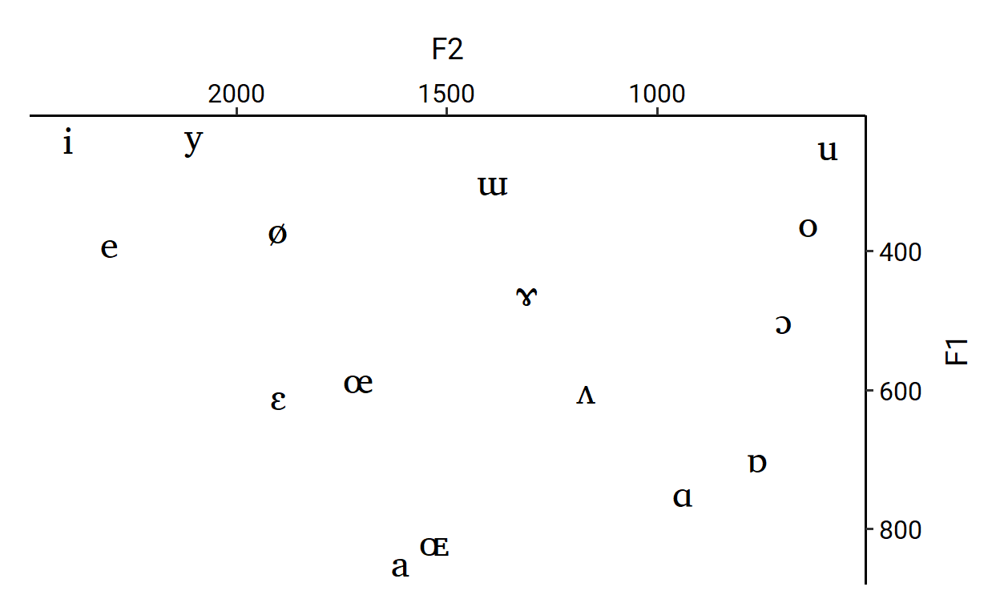
Rotate-Right
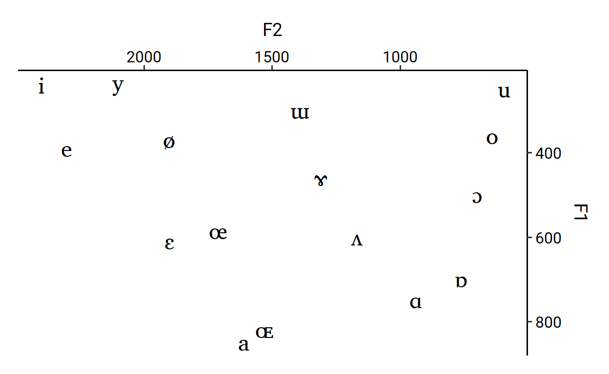
Marquee
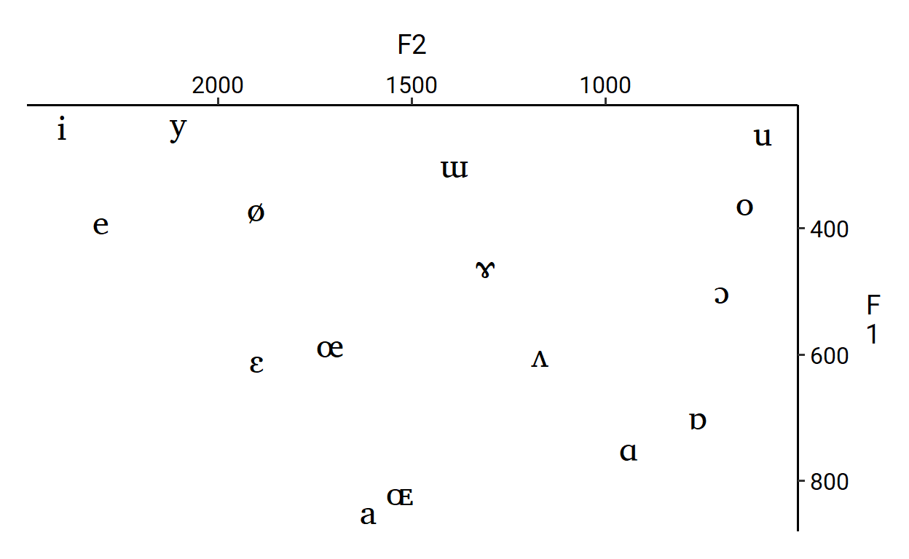
Horizontal text doesn’t look too bad for longer y-axis titles either. When the title spans more than one line long, left-justification usually looks best. Make sure to also take line-height into consideration for any multi-line text.
states_plot <- state.x77 %>%
as.data.frame() %>%
ggplot(aes(x = Illiteracy, y = `HS Grad`)) +
geom_point() +
labs(y = "Percent of\nhigh school\ngraduates") +
theme(
axis.title.y = element_text(
angle = 0,
vjust = 0.5,
hjust = 0,
lineheight = 1
)
)
states_plot
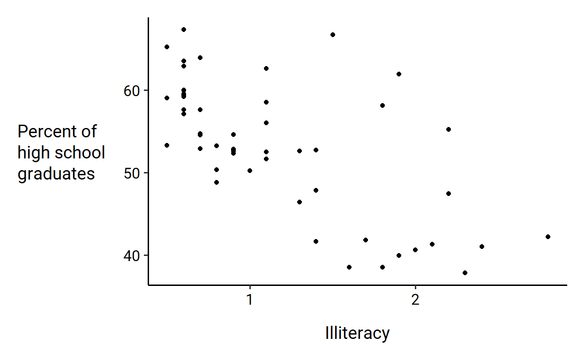
For comparison, here are right and center justifications (and also vertical text):
Right-Justification
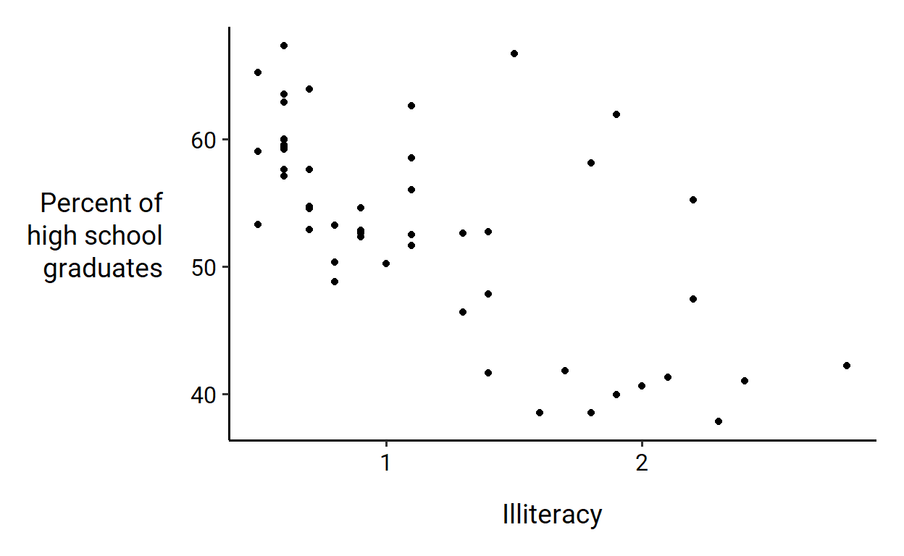
Center-Justification
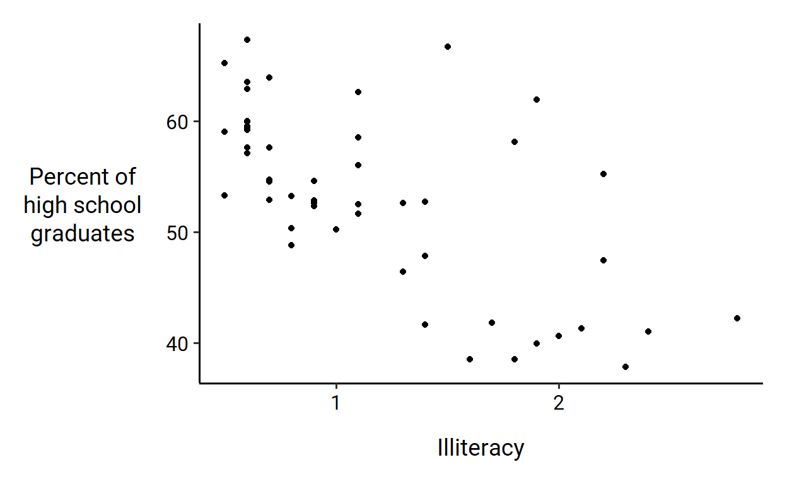
Vertical
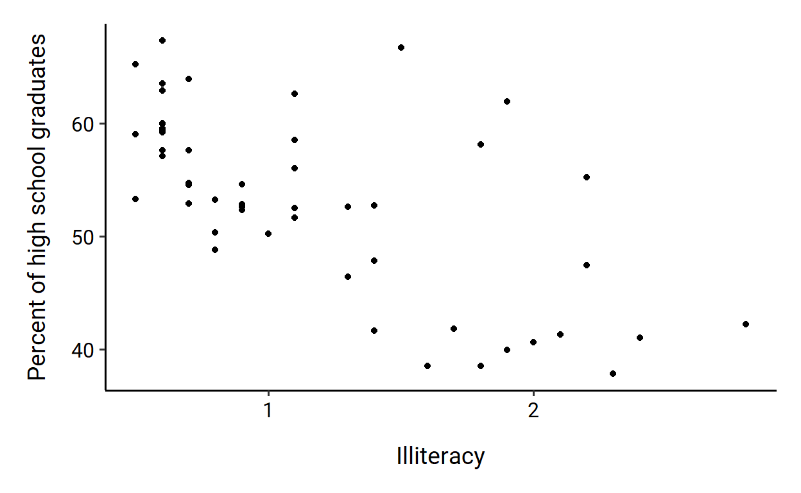
Given the special emphasis placed on the variable mapped to the y-axis, I feel like you can get away with explaining the y-axis inside the title for the most part.
Consider this remake of the above plot:
states_plot +
labs(
title = "Percent of high school graduates by state",
y = NULL
)
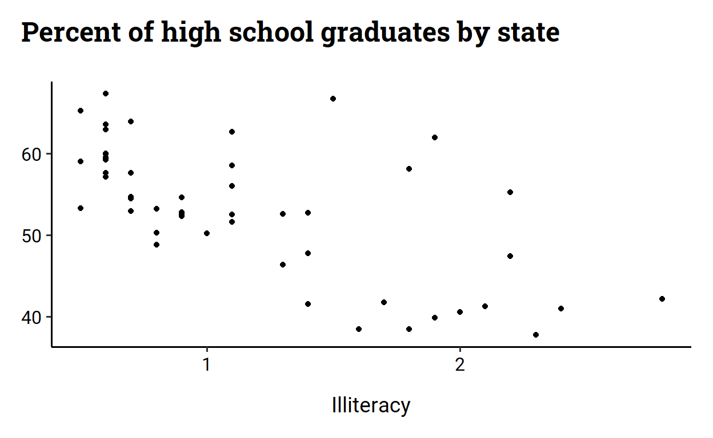
To me, this doesn’t look too bad. The axis title is not labeled directly on the axis, but its position in the plot title and the presence of an overt x-axis title help facilitate that association.
Furthermore, as I mentioned earlier, this feels very natural for explanatory data viz where the y-axis is the dependent variable in an experiment.
set.seed(1234)
response_time_plot <- data.frame(
condition = rep(c("A", "B"), 30),
response_time = rnorm(30, c(1500, 3000), 500)
) %>%
ggplot(aes(condition, response_time)) +
geom_boxplot(width = .3) +
labs(
title = "Response time distributions from Experiment 1",
y = NULL
)
response_time_plot
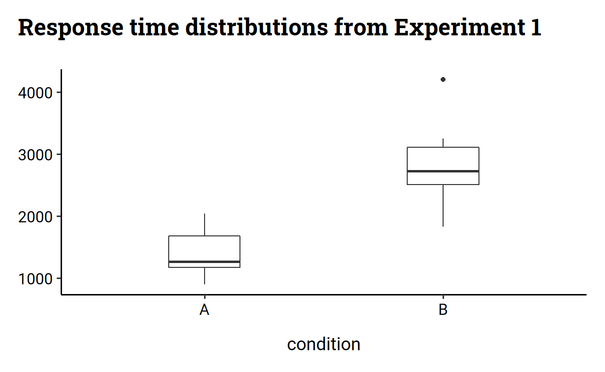
For indirect labeling the y-axis, it helps vastly if the text of the axis breaks are labeled with the relevant unit of the y-axis variable.
Here, I modify the above plot by adding “ms” (milliseconds) to the y-axis breaks:
response_time_plot +
scale_y_continuous(labels = function(x) { paste0(x, "ms") })
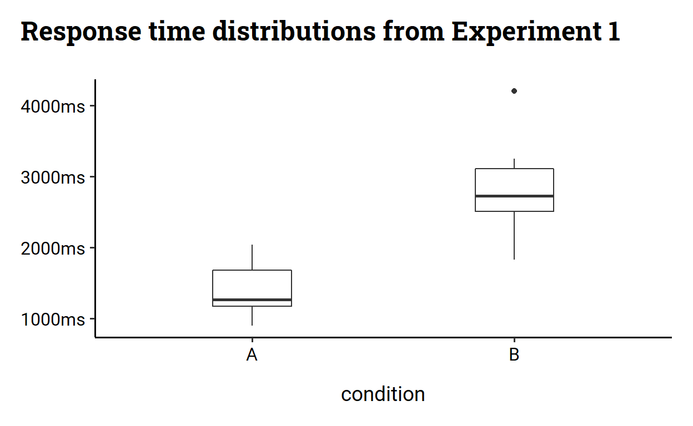
This makes clearer the association between the indirect label in the plot title and the axis that it is labeling.
But often it’s not always necessary to label all breaks with a unit. For example, we can just get away with putting a unit label for the top-most tick mark:
response_time_plot +
scale_y_continuous(
labels = function(x) {
labs <- which(!is.na(x))
last_idx <- labs[length(labs)]
replace(x, last_idx, paste0(x[last_idx], "ms"))
}
)
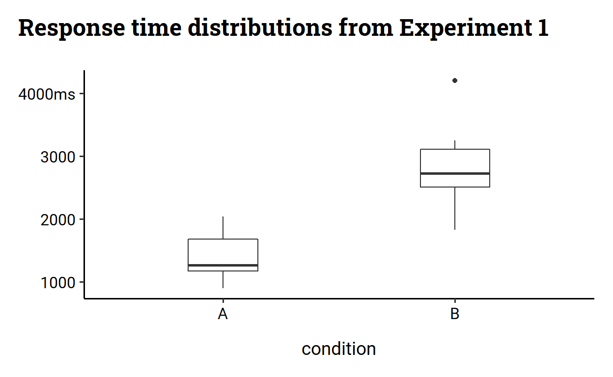
accuracy_plot <- data.frame(
condition = rep(c("Baseline", "Treatment"), 30),
accuracy = rbinom(30, 1, c(0.3, 0.8))
) %>%
ggplot(aes(x = condition, y = accuracy)) +
geom_jitter(
alpha = 0.5,
shape = 16,
position = position_jitter(height = .01, width = .05)
) +
stat_summary(
aes(
y = stage(accuracy, after_stat = estimate),
ymin = after_stat(conf.low),
ymax = after_stat(conf.high)
),
geom = "errorbar",
width = .1,
fun.data = function(x) { broom::tidy(prop.test(x = sum(x), n = length(x))) }
) +
stat_summary(
geom = "point",
size = 3
) +
scale_y_continuous(labels = scales::percent_format()) +
lemon::coord_capped_cart(ylim = c(0, 1), left = "both") +
labs(
title = "Accuracy in comprehension experiment",
y = NULL
)
accuracy_plot
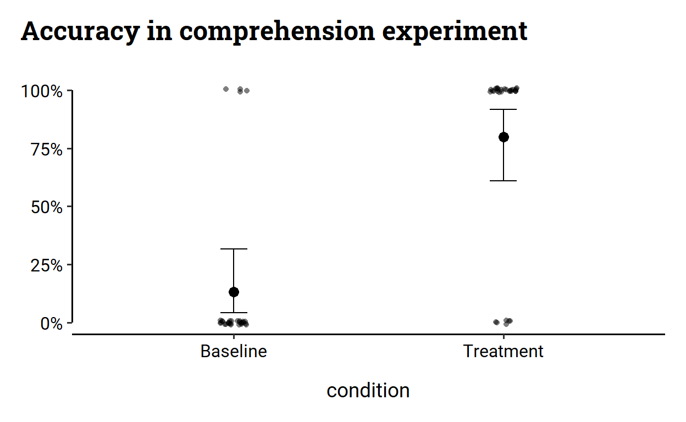
Do I really need the y-axis title to be long?
Do I really need the y-axis title to be vertical?
Do I really need the y-axis title to be to the left of the y-axis?
Do I really need the y-axis to be titled at all?
Byrne, Michael D. 2002. “Reading Vertical Text: Rotated Vs. Marquee.” Proceedings of the Human Factors and Ergonomics Society Annual Meeting 46 (17): 1633–5. https://doi.org/10.1177/154193120204601722.
If you need more evidence, here’s a subtler one: there’s no standard for the direction of vertical text. Just go outside and look at vertical store signs and banners on street lights! Some are stacked, some are rotated right, and some are rotated left.↩︎
In fact, I still use them sometimes, though less and less↩︎
Hot take: the whole paper is actually just a big build-up to that one plot in your Results section↩︎